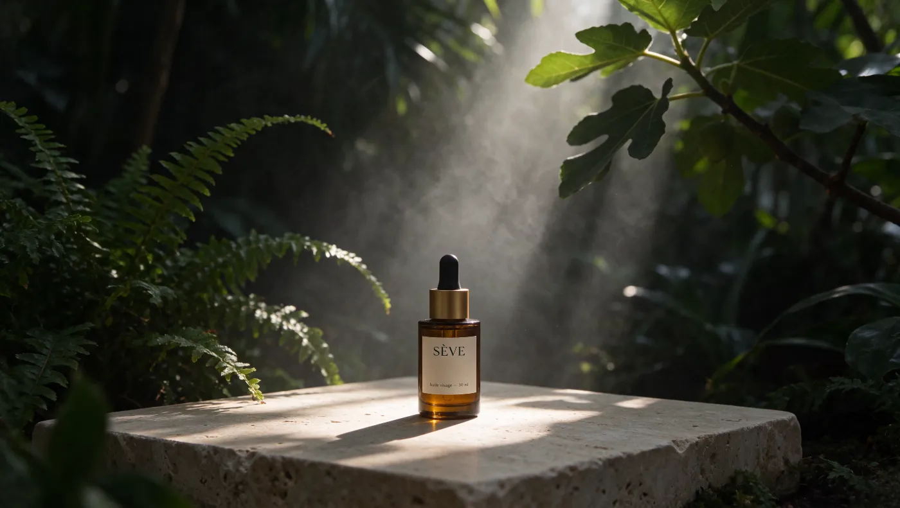
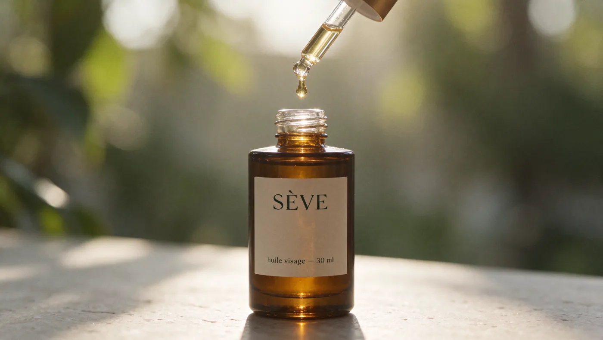
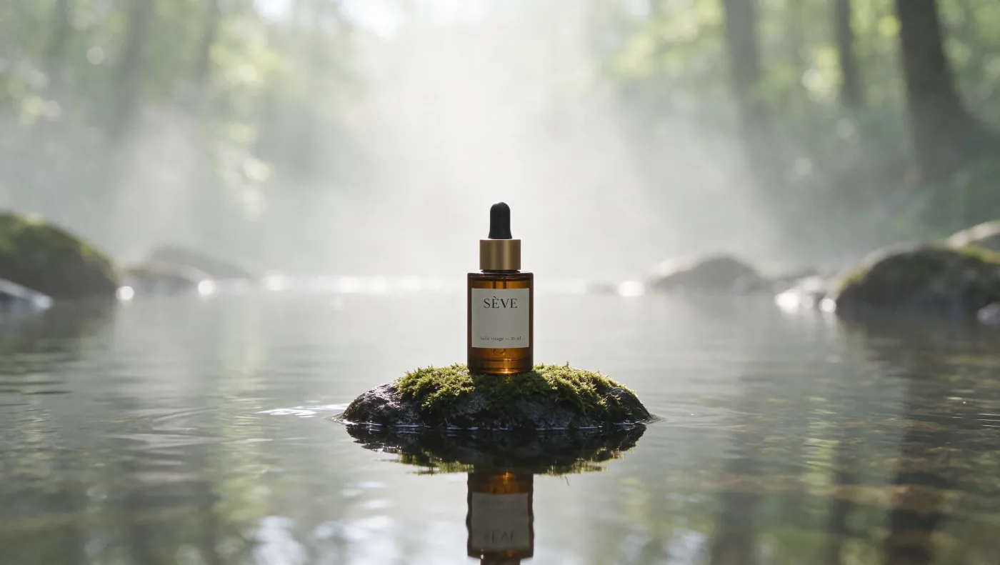
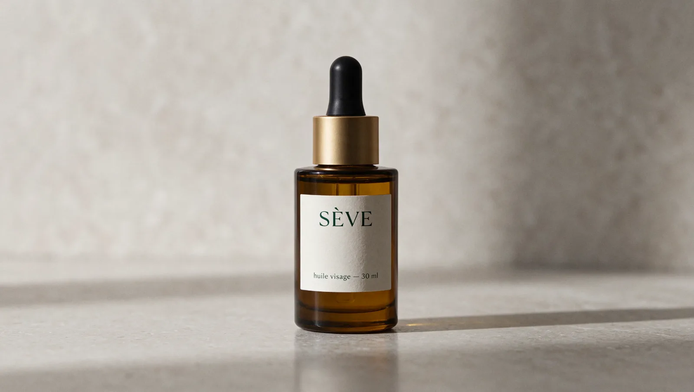

La sève des plantes, pressée à froid.
Huiles et soins naturels, faits à la main dans notre atelier de Saint-Gilles.
Une huile, trois effets.
-
Nourrit sans graisser
Le jojoba et la cameline pénètrent vite : la peau reste souple, jamais brillante.
-
Apaise les peaux sensibles
Le calendula et la camomille calment les rougeurs du matin.
-
Pressée à froid, non raffinée
Les huiles gardent leurs vitamines et l’odeur de la plante.

Trois gouttes suffisent.
- Le soir, sur une peau propre et encore humide.
- Réchauffez l’huile entre vos paumes.
- Appuyez doucement sur le visage, sans frotter.

Sept soins, une même origine.
Des huiles végétales pressées à froid, des eaux florales, des cires et des beurres : peu d’ingrédients, choisis un par un.
Filtrer par type de peau
Un petit atelier, à Saint-Gilles.
Chaque semaine, nous pressons, filtrons et mettons en flacon une petite série. Les huiles reposent quelques jours avant d’être étiquetées à la main.
Vous pouvez passer chercher votre commande à l’atelier, du mardi au samedi : on vous fera sentir les huiles du moment.